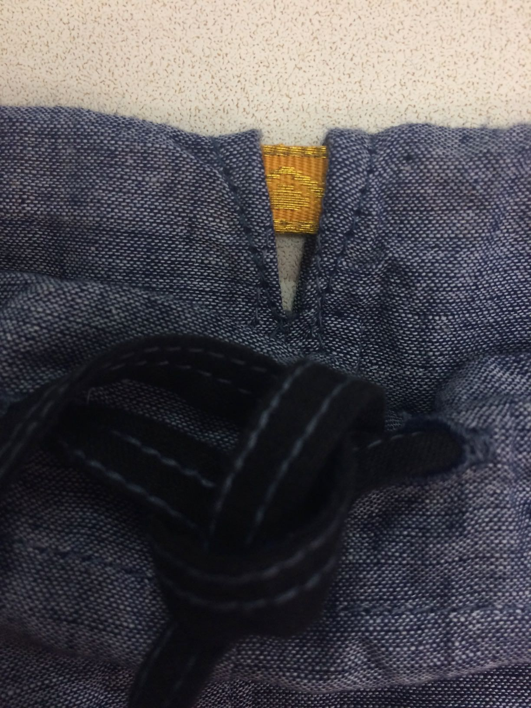
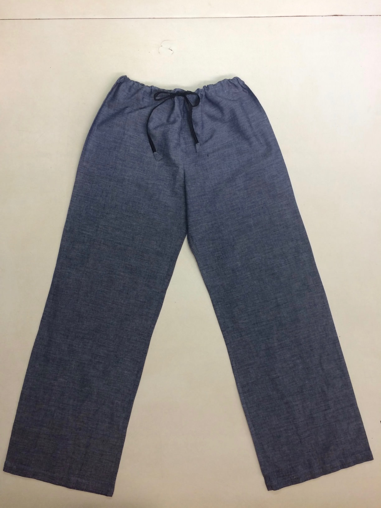
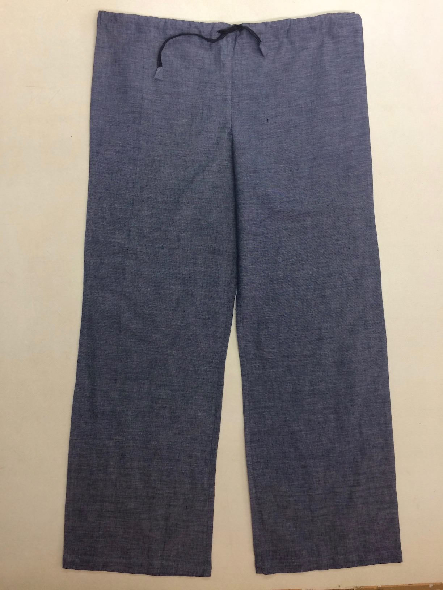
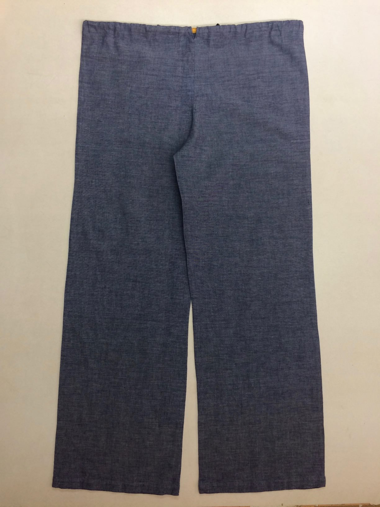
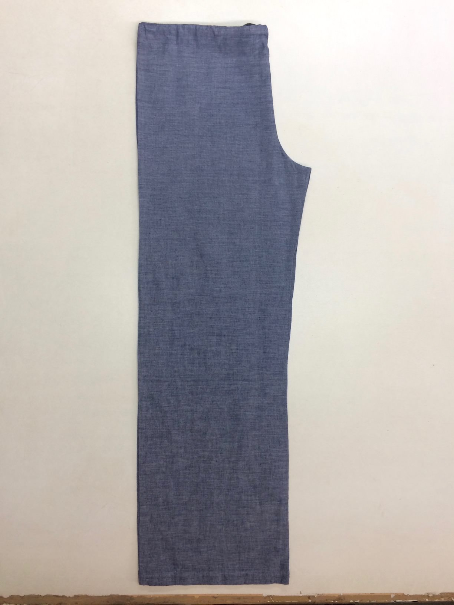
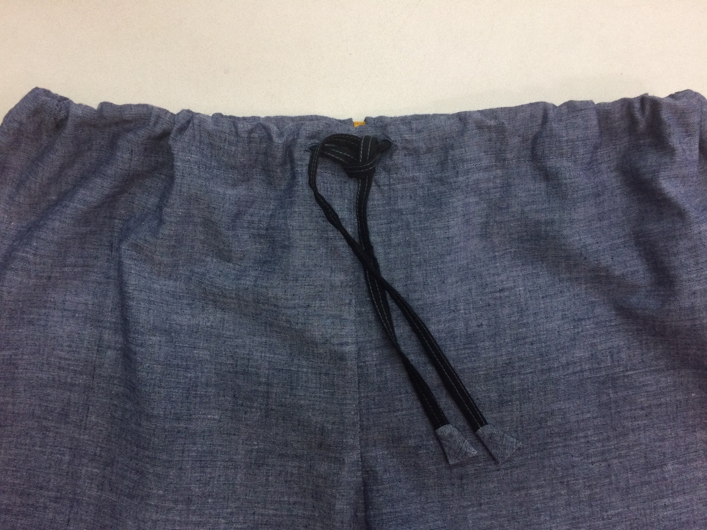
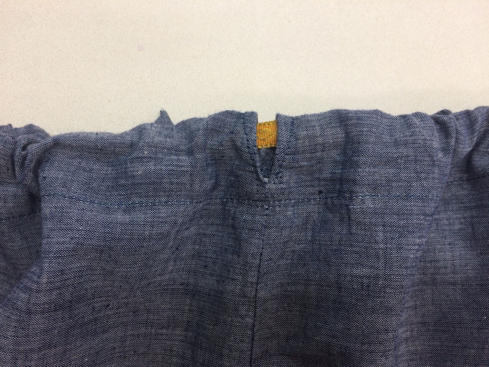
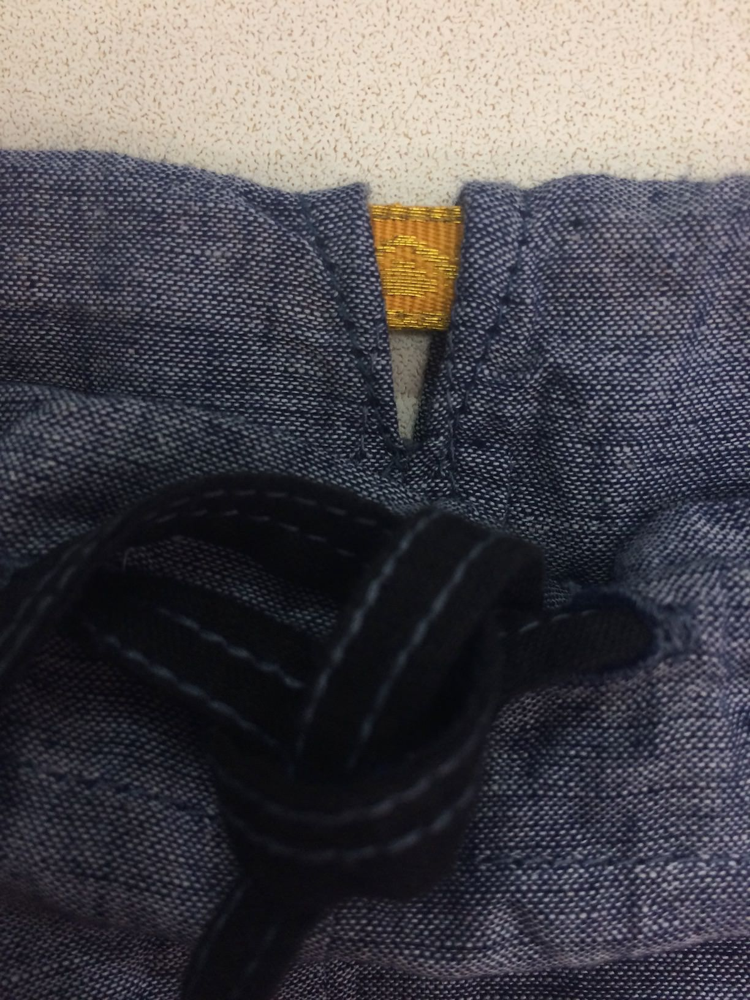
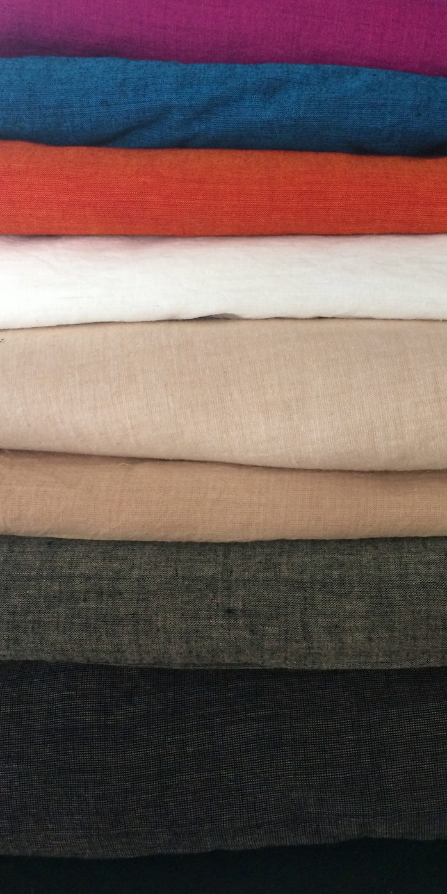

Front with Tie and "Peep-Hole"

Front with Tie and "Peep-Hole" - Closeup showing contrast thread, and Zari
The drawstring itself is detailed with a contrasting thread.

Front - Drawstring Tied

Front - Drawstring Open

Back - Drawstring Open

Side - Drawstring Open

Front - Drawstring Tie

Back - Drawstring "Peep-Hole" with Zari Detail
The waistband has a "Peep-Hole" at the back that displays contrasting Zari that is stitched on the drawstring (approximately a 10cm strip of zari). The peep-hole is an opening of about 1 cm. The drawstring is stitched to the waistband around the zari so that the zari remains in place at the peep-hole even when the drawstring is cinched.
Front with Tie and "Peep-Hole"

Front with Tie and "Peep-Hole" - Closeup showing contrast thread, and Zari
The drawstring itself is detailed with a contrasting thread.
In addition to the Jean colour pictured above, the drawstring is currently available in the following colours (please check carefully, the names of the colours are not exactly aligned with the colour in the picture)
|  | Violet |
| Blue | |
| Tangerine | |
| Ivory | |
| Sand | |
| Sandal | |
| Dirty Grey | |
| Dark Grey | |
| Black |